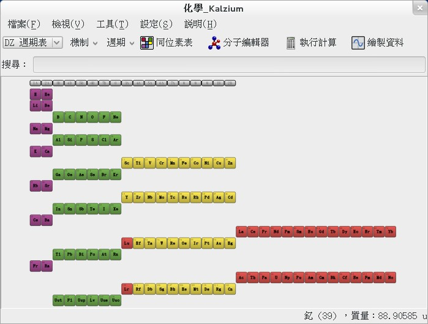

也紀念我們永遠的朋友 李士傑先生（Shih-Chieh Ilya Li）。
Kalzium－－您手邊的化學字典
軟體名稱: Kalzium
介紹版本: 2.4.01
官網: https://edu.kde.org/kalzium/
授權: GPL-2.0
Kalzium 是一款主攻化學知識的學習輔助軟體，能夠向對這門科學有興趣的朋友們提供幫助。它以一份可調整的元素週期表為中心，提供了極為詳盡的元素資料，除此之外像化學公式計算機、分子模型、各式圖表、術語表等也都沒有漏掉。
Kalzium 的元素週期表是「可調整」的，它支援數種不同的週期表格式，還能夠用融點、沸點、凡得瓦半徑等方式來篩選與排序元素，視覺呈現能力很強。
安裝
本專案屬於 KDE 計劃的一環，在 Linux 中只要用原生的包管理器就能簡單安裝。不過我沒有找到現成的 Windows & Mac 安裝包，恐怕不能簡單支援 Windows & Mac。
功能介紹
主介面的週期表
當您打開 Kalzium 後，第一個看到的就是類似下面這樣的主畫面。
▲ 圖1：Kalzium 的主畫面。當您第一次開啟時，周圍可能還會有些小的訊息視窗，但我把他們都關掉讓畫面清爽一點。
不用我說大家都知道，這是一張標準格式的元素週期表。是偉大化學家德米特里‧伊凡諾維奇‧門得列夫的空前成就。這張表在 1869 年被建立時，甚至還大膽地留下了數個空位，並預言了當時還未被發現的元素與其性質。作為近代化學研究最重要基礎工具的發明人，德米特里‧伊凡諾維奇不能獲得諾貝爾化學獎是諾貝爾獎的遺憾，而不是他本人的失敗。這點毋庸置疑。
就如同波函數方程式中的機率波概念，或在馬克士威方程組中推導出的絕對光速等眾多科學發現一樣，在門得列夫的時代，人們也不知道為什麼週期表必須要這樣安排，他只是把看似相關的元素疊在一起，並做出預言。直到後來，人們才發現這樣的排列模式與原子序及原子外層的電子軌域結構有關，換言之，元素的外顯性質正與電子軌域直接相關……愛因斯坦的名言：「在探索道路上真有價值的是直覺，智力沒啥大用」誠不我欺也。（雖然我相信尼爾斯‧波爾會很樂意地對他吐嘈：「愛因斯坦，不要告訴科學祂需要什麼。」）
……因為喜歡科學史，忍不住就興奮了起來。史普到此為止，繼續看程式吧。
不同的週期表格式
元素週期表方面，除了門德列夫的經典格式外，尚有其他數種格式可選用。

▲ 圖2：此為其中一種額外格式－－德國中央委員會 (Deutscher Zentralausschuss) 建議格式。
在週期表上搜尋元素
在上方的搜尋條中可以輸入元素的中英名稱，來快速定位它在週期表中的位置：
▲ 圖3：搜尋元素
著色與分類
可以變更週期表的著色機制來進行不同的分類。如下所示：

▲ 圖4：這張圖採用元素的特性來分類，至於先前的「圖1」則是依照最外側價電子軌域來分類。使用者可以自由選擇不同分類方式來參考。
▲ 圖5：以 2020 度Ｋ為準，顯示物質的三相狀態。紅色為固態，藍色為液態，綠色為氣態。灰色的人造元素大都是用粒子加速器硬打出來的，產量太少半衰期又短所以還搞不清楚。
使用者可任意變更溫度值來重畫圖5，或是用相同的邏輯去過濾電負性、凡得瓦半徑、發現年代等資料。會非常清晰易讀。
▲ 圖6：以 1871 年為界，看有哪些元素被發現了。
元素的詳細訊息
當您雙擊週期表上的元素時，會列出個別元素的詳細訊息。如下：
▲ 圖7：元素的詳細資料表－－基本資料。
▲ 圖8：元素的詳細資料表－－雜項資料。
除此之外，就連發射／吸收光譜、同位素的豐度資訊都有，值得參考。
其他工具與參考資料
除了基本的週期表與其衍生物以外，Kalzium 中還有更多的好東西。您可以在工具選單中找到他們。以下就來介紹。
同位素總表
下圖的巨大表格，列出了人類目前已知所有元素的所有同位素。滾動滾輪可以縮放本表，右鍵點擊就能在左側顯示出相應資訊。
▲ 圖9：同位素總表。
但也因為表太大了，個人覺得有些不太好用。各位參考看看。
分子編輯器
Kalzium 內建的分子編輯器非常有趣，可以讓大家自行下載瀏覽現有的 3D 分子，還可以任意測量分子內部距離，和各鍵結間的夾角。
看圖先：
▲ 圖10：分子編輯器。這是芳香烴中的萘 (Naphthalene)，樟腦丸的主要材料，有毒不可以吃。但活在維多利亞時代的可憐傢伙們也會用它來治療寄生蟲……
▲ 圖11：分子編輯器。苯環＋甲基＋三個硝基＝三硝基甲苯 (Trinitrotoluene, TNT)，會爆炸的那個。
瀏覽時可以將分子任意縮放旋轉，而想「新建分子」或「修改現有分子」也非常簡單。
您可以按下方的「下載新分子」取得更多別人已經做好的分子。搜尋時，請用分子的英文名字來搜。
化學計算機
Kalzium 的化學計算機提供了一些常見的化學計算功能。
▲ 圖12：化學計算機中的「方程式平衡計算機」，可以自動平衡化學方程式中的反應物與生成物。
繪製元素比較圖表
本功能可以將元素的兩種屬性套用到兩個軸上，來繪制關係圖。
▲ 圖13：這是六個鹼土金屬元素「原子量」與「原子半徑」間的對比圖。順便一提，此處顯示的原子半徑資料和我在別處查到的資料似乎有點落差，不知道是資料有錯又或是我理解方式不對。熟化學的朋友請幫忙檢查一下看看，看需不需要向上游提交問題。
可選的屬性有多種，包括凡得瓦半徑、原子序、原子量、電負性與熔點等等。
化學字典
Kalzium 提供了一套簡要的化學用語字典供快速查找。
▲ 圖14：化學用語辭典，而且還被完全中文化了。譯者幹得好！
基本上該有的都有了，範圍夠廣但又不會資訊過量，有些還有附圖。
當然，或許您更偏好維基百科？
化學檔案轉換
除了上述這些功能外，Kalzium 還在「檔案選單」中，提供了化學檔案互轉功能。我數了數，能轉換的檔案類型有將近有一百種，值得一試。
在下不是專業化學家，無法深入測試，這方面就得請專家來發表心得了。
相關連結
- 官網與開發部落格：和 Kalzium 相關且最容易在網路上搜到的入口，可惜這兩個地方根本沒在更新，給人第一印象以為開發已經中止了（但這印象是錯的）。
- Kalzium 開發資訊頁：大部分的資料要從此頁為入口獲取。
- 官方說明手冊：詳盡、美觀、易讀、索引完整並附圖說明。對需要細部操作說明者大力推荐。
- 原始碼倉庫：架在 project.kde.org 中。可用 git 抓取操作。
專欄總覽


E-Mail：contact@openfoundry.org Address：台北市南港區研究院路2段128號 中央研究院資訊科學研究所 . 隱私權條款. 使用條款